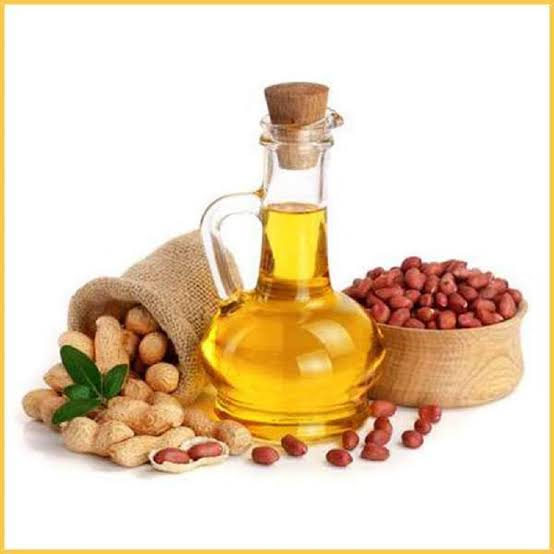

<div id="product-page" class="container">
	<div class="bg">
		<div class="row">
			<div class="col-sm-12">
				<h2 class="title text-center">Cold Pressed Groundnut Oil</h2>
			</div>
		</div>
		<div class="row">
			<div class="col-sm-6">
				
			</div>
			<div class="product-information col-sm-6">
				<!--/product-information-->
				<h2>Cold Pressed Groundnut Oil</h2>
				<span>
					<span>&#8377;270 / 1ltr</span>
					<button (click)="addToCart('p1')" type="button" class="btn btn-fefault cart"><i
							class="fa fa-shopping-cart"></i>Add to cart</button>
					<button (click)="addToCart('p1')" type="button" class="btn btn-fefault cart" routerLink="/cart"><i
							class="fa fa-shopping-cart"></i>Buy it</button>
				</span>
				<p> <del> &#8377;350 / 1ltr</del> </p>
				<p><b>Availability:</b> In Stock</p>
				<p><b>Brand:</b> OriOrg</p>
				<span> <span>&#8377;170 / half ltr</span>
					<button (click)="addToCart('p10')" type="button" class="btn btn-fefault cart"><i
							class="fa fa-shopping-cart"></i>Add to cart</button>
					<button (click)="addToCart('p10')" type="button" class="btn btn-fefault cart" routerLink="/cart"><i
							class="fa fa-shopping-cart"></i>Buy it</button>
				</span>
				<p> <del> &#8377;200 / 1ltr</del> </p>
				<p><b>Availability:</b> In Stock</p>
				<p><b>Brand:</b> OriOrg</p>
			</div>
			<!--/product-information-->

		</div>

		<br>
		<div class="row">
			<div class="col-sm-12">
				<h2 class="title text-center">BENEFITS</h2>
			</div>
			<div class="col-sm-1">
			</div>
			<div class="col-sm-10">
				<p>Cold Pressed oils are the most healthiest oils used for cooking. Our cold pressed groundnut oil is
					extracted at a low temperature using Marachekku(wood press), a traditional method of crushing the
					seeds. No chemicals or preservatives are used in this process to avoid the adulteration or loss of
					natural flavour and aroma. Groundnut/Peanut oil is very rich in essential fatty acids, Vitamin E and
					plant sterols(it helps in reducing the heart disease), which makes it an ideal choice for everyday
					cooking. Apart from which, the compound Resveratrol also helps in reducing the risk of cancer,
					alzheimer's, dementia and other nerve related issues. </p>
				<p>Indians have been using groundnut oil from many centuries. However, in recent years refined oils rose
					to popularity because of mass production and marketing. But contrary to popular belief, refined oils
					are much unhealthy and have traces of chemicals in them. Also, refined oils lose essential fatty
					acids and nutrients, because of the high temperature they are subjected to during the extraction.
				</p>
				<p>So, switch back to the premium quality unrefined cold pressed Groundnut Oil, rich in essential
					vitamins, fatty acids and delicious too..</p>
				<p>Best before 6 months from the date of packing. Store in a cool dry condition, away from direct
					sunlight and heat. </p>
				<h4> Controls Cholesterol Levels</h4>
				<p>Peanut oil is cholesterol free, which is one of the major factors contributing to complicated heart
					conditions such as atherosclerosis. Since cooking oil is used in many different ways, eliminating
					this dangerous cholesterol from your body can help prevent a variety of health complications.
					Furthermore, not only does peanut oil lack cholesterol, it can reduce your current levels of
					cholesterol due to the presence of plant sterols. These phytosterols actually compete for
					cholesterol absorption in the stomach and gut, which can lower your cholesterol levels by 10-15%!
				</p>
				<h4>Heart Health Benefits</h4>
				<p>A 1-tablespoon serving of cold pressed groundnut oil has 13 grams of total good fat, the majority of
					which is unsaturated fat. The American Heart Association recommends getting the majority of your fat
					from unsaturated fats which is also known as good cholesterol. Replacing saturated and trans fats
					with unsaturated fats can reduce your risk of heart disease; monounsaturated fats help lower bad
					cholesterol levels. Cold pressed Groundnut oil contains about 5.5 grams of monounsaturated fats per
					tablespoon, 50 % of the total fat content, and 4 grams of polyunsaturated fats, 32 percent of the
					total fat content</p>
				<h4>Anti-cancer Potential</h4>
				<p>There has been a lot of debate on the potential of nutritional components of nuts in cancer
					prevention. [7] In a 2016 report published in the Journal of Food Science and Technology, studies
					suggest that unsaturated fats and bioactive compounds in peanuts have cancer-preventive effects. [8]
					Research led by Awad AB et al. [9] showed that peanut oil contained phytosterols and in particular
					beta-sitosterol, which may have the ability to protect the body from colon, prostate, and <b>breast
						cancer</b>. Another detailed study titled “Anticancer effects of phytosterols” suggests that
					these natural plant compounds have the ability to inhibit carcinogen production and cancer-cell
					growth (Woyengo TA et al., 2009). [10] Consumption of phytosterols may also be positively linked to
					increased activity of antioxidant enzymes and reduced oxidative stress.</p>
				<h4>Immune System Boosts</h4>
				<p>A final benefit of the impressive levels of resveratrol in peanut oil is the improvement of your
					immune system. [14] Viral and fungal infections are particularly susceptible to this antioxidant, so
					adding peanut oil to your diet can keep you healthy in yet another way, by stimulating your white
					blood cell production to fend off any foreign agents in your body.</p>

			</div>
			<div class="col-sm-1">
			</div>
		</div>
	</div>
</div>
<!--/#product-page-->